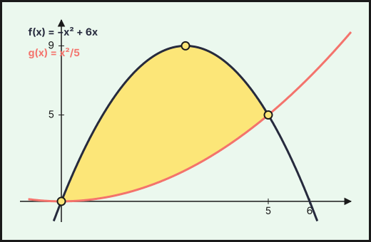
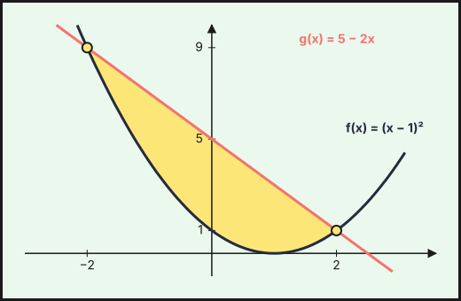

PAU Andalucía — Integrales
Ejercicios de Matemáticas Aplicadas a las Ciencias Sociales II de la prueba de acceso a la universidad en Andalucía (PAU, antes PEvAU) de 2021 a 2026 cuyo tema principal es integrales: 3 ejercicios de convocatorias ordinarias y extraordinarias y de sus reservas o suplentes. Repasa antes la teoría, los ejercicios del tema y las actividades interactivas.
Debajo de cada ejercicio hay tres desplegables, de menos a más ayuda: Ayuda 1 · Recordatorio (la teoría que necesitas, sin tocar los datos), Ayuda 2 · Método (los pasos a seguir) y la resolución breve con el resultado. Inténtalo con la menor ayuda posible.
2024
Ordinaria · Reserva · Modelo A 2024
Ejercicio 3 · Ordinaria · Reserva · Modelo A 2024 · Bloque B · (2,5 puntos) · Examen
Se desea analizar la evolución de la población de una localidad. Se conoce que la función \(f\) aproxima el número de habitantes que tiene la población para cada tiempo \(t\), medido en meses, con \(t\in[0,60]\). El crecimiento de esta población viene dado por la siguiente expresión: \[f'(t)=400+30\sqrt t\] También se sabe que la población en la actualidad, \(t=0\), es de \(90\,000\) habitantes.
¿Cuál será la población dentro de \(9\) meses? (1,25 puntos)
Calcule \(\displaystyle\int_9^{16}f'(t)\,dt\) e interprete el resultado. (0,75 puntos)
Si se entrega una ayuda de 150 € por cada nuevo habitante durante los tres primeros años, calcule la cuantía total aproximada de la ayuda que recibirá la localidad. (0,5 puntos)
Relacionado también con: Derivadas.
Primitivas.
\(\int x^n\,dx=\dfrac{x^{n+1}}{n+1}+C\ (n\neq-1)\); \(\int\dfrac{1}{x}\,dx=\ln|x|+C\); \(\int e^{kx}\,dx=\dfrac{e^{kx}}{k}+C\); \(\int\dfrac{u'}{u}\,dx=\ln|u|+C\). Linealidad: \(\int(af+bg)=a\int f+b\int g\). Para \(F(x)\) con \(F(a)=b\) se usa la constante \(C\).
Integral definida (regla de Barrow).
Regla de Barrow: \(\int_a^b f(x)\,dx=F(b)-F(a)\), con \(F\) una primitiva de \(f\). Si \(f\ge0\) en \([a,b]\), la integral es el área bajo la curva; si \(f\le0\), es el área cambiada de signo.
Primitivas.
- Reescribe el integrando como suma de potencias (separa fracciones, pasa raíces a exponente fraccionario).
- Integra término a término.
- Si piden una primitiva concreta, impón la condición \(F(a)=b\) para hallar \(C\).
- Deriva el resultado para comprobarlo.
Integral definida (regla de Barrow).
- Halla una primitiva \(F\).
- Evalúa \(F(b)-F(a)\) cuidando los signos y las fracciones.
- Interpreta el signo del resultado.
a) Población dentro de 9 meses. 1. Se obtiene \(f\) integrando su derivada: \(f(t)=\displaystyle\int\left(400+30\sqrt t\right)dt=400t+20t^{3/2}+K\). 2. Condición inicial \(f(0)=90\,000\): \(K=90\,000\), es decir, \(f(t)=90\,000+400t+20t\sqrt t\). 3. \(f(9)=90\,000+3\,600+20\cdot27=94\,140\).
Dentro de 9 meses habrá \(94\,140\) habitantes.
b) Integral de la derivada. 1. Regla de Barrow: \(\displaystyle\int_9^{16}f'(t)\,dt=f(16)-f(9)\). 2. \(f(16)=90\,000+6\,400+1\,280=97\,680\), luego \[\int_9^{16}f'(t)\,dt=f(16)-f(9)=(90\,000+6\,400+1\,280)-94\,140=97\,680-94\,140=3\,540.\]
Es el aumento de población entre el mes \(9\) y el mes \(16\): la localidad gana \(3\,540\) habitantes.
c) Ayuda total. 1. Tres años son \(36\) meses. Nuevos habitantes: \(f(36)-f(0)=400\cdot36+20\cdot216=14\,400+4\,320=18\,720\). 2. Ayuda: \(18\,720\cdot150\).
Ayuda: \(18\,720\cdot150=2\,808\,000\) €.
Ordinaria · Suplente · Modelo A 2024
Ejercicio 3 · Ordinaria · Suplente · Modelo A 2024 · Bloque B · (2,5 puntos) · Examen
La superficie de ampliación de un parque de atracciones, en decámetros cuadrados, coincide con el área de la región delimitada por las gráficas de las funciones \(f(x)=-x^{2}+6x\) y \(g(x)=\dfrac{x^{2}}{5}\).
Represente gráficamente la superficie de ampliación del parque de atracciones. (1 punto)
Si el coste para acondicionar el nuevo suelo es de \(75\ €/\text{m}^{2}\), calcule el área de ampliación del parque y el coste total del acondicionamiento. (1,5 puntos)
Relacionado también con: Funciones.
Área de un recinto.
Área entre \(y=f(x)\) y el eje \(X\): \(\int_a^b|f(x)|\,dx\), partiendo en los puntos donde \(f\) cambia de signo. Área entre dos curvas: \(\int_a^b\left(f(x)-g(x)\right)dx\) con \(f\ge g\). Los límites de integración son las abscisas de corte.
Representar una función.
Una gráfica se construye con: dominio, cortes con los ejes, asíntotas, monotonía y extremos (con \(f'\)), curvatura y puntos de inflexión (con \(f''\)), y una tabla de valores. Convexa si \(f''>0\) y cóncava si \(f''<0\).
Área de un recinto.
- Haz un esbozo del recinto.
- Calcula los puntos de corte (resolviendo \(f=g\) o \(f=0\)): son los límites.
- Decide qué función va por encima en cada tramo; si se cruzan, parte la integral.
- Aplica Barrow y da el área en \(\text{u}^2\), siempre positiva.
Representar una función.
- Dominio y cortes.
- Asíntotas verticales, horizontales y oblicuas con límites.
- Signo de \(f'\): intervalos de crecimiento y extremos.
- Signo de \(f''\) si hace falta, y unos cuantos puntos.
- Dibuja y comprueba que la gráfica respeta todos los datos anteriores.
a) Gráfica de la superficie. 1. \(f(x)=-x(x-6)\) es una parábola abierta hacia abajo con vértice \((3,9)\) que corta al eje \(OX\) en \(x=0\) y \(x=6\). 2. \(g(x)=\dfrac{x^2}{5}\) es una parábola abierta hacia arriba con vértice en el origen. 3. Puntos de corte: \(-x^2+6x=\dfrac{x^2}{5}\iff6x=\dfrac{6}{5}x^2\iff x=0\) o \(x=5\), es decir, \((0,0)\) y \((5,5)\). 4. La superficie es la región entre ambas, con \(f\) por encima de \(g\).

b) Área y coste. 1. Área entre las curvas: integral de la función de arriba menos la de abajo. 2. Barrow: \[A=\displaystyle\int_0^5\left(-x^2+6x-\frac{x^2}{5}\right)dx=\int_0^5\left(-\frac{6}{5}x^2+6x\right)dx=\left[-\frac{2x^3}{5}+3x^2\right]_0^5=-50+75=25.\] 3. Unidades: \(1\) dam\(^2=100\) m\(^2\).
El área es de \(25\) dam\(^2\), es decir, \(2\,500\) m\(^2\).
- Coste: \(2\,500\cdot75=187\,500\) €.
2023
Ordinaria · Modelo B 2023
Ejercicio 3 · Ordinaria · Modelo B 2023 · Bloque B · (2,5 puntos) · Examen
El área quemada de la región plana de la cubierta de plástico de un invernadero, coincide con el área de la región acotada delimitada por las gráficas de las funciones \(f(x)=(x-1)^{2}\) y \(g(x)=5-2x\) donde \(x\) está expresado en metros.
Represente gráficamente la zona deteriorada. (1 punto)
Para reparar la región quemada, se ha de utilizar plástico cuyo coste es de 15 euros por metro cuadrado. Si en el trabajo de reparación se desperdicia la tercera parte del plástico adquirido, ¿cuánto costará el plástico comprado? (1,5 puntos)
Relacionado también con: Funciones.
Área de un recinto.
Área entre \(y=f(x)\) y el eje \(X\): \(\int_a^b|f(x)|\,dx\), partiendo en los puntos donde \(f\) cambia de signo. Área entre dos curvas: \(\int_a^b\left(f(x)-g(x)\right)dx\) con \(f\ge g\). Los límites de integración son las abscisas de corte.
Representar una función.
Una gráfica se construye con: dominio, cortes con los ejes, asíntotas, monotonía y extremos (con \(f'\)), curvatura y puntos de inflexión (con \(f''\)), y una tabla de valores. Convexa si \(f''>0\) y cóncava si \(f''<0\).
Área de un recinto.
- Haz un esbozo del recinto.
- Calcula los puntos de corte (resolviendo \(f=g\) o \(f=0\)): son los límites.
- Decide qué función va por encima en cada tramo; si se cruzan, parte la integral.
- Aplica Barrow y da el área en \(\text{u}^2\), siempre positiva.
Representar una función.
- Dominio y cortes.
- Asíntotas verticales, horizontales y oblicuas con límites.
- Signo de \(f'\): intervalos de crecimiento y extremos.
- Signo de \(f''\) si hace falta, y unos cuantos puntos.
- Dibuja y comprueba que la gráfica respeta todos los datos anteriores.
a) Zona deteriorada. 1. Puntos de corte: \((x-1)^2=5-2x\iff x^2=4\iff x=\pm2\), es decir, \((-2,9)\) y \((2,1)\). 2. La parábola \(y=(x-1)^2\) tiene vértice en \((1,0)\) y la recta \(y=5-2x\) pasa por \((0,5)\) y \(\left(\tfrac{5}{2},0\right)\). 3. La zona deteriorada es el recinto entre ambas, con la recta por encima de la parábola, para \(-2\le x\le2\).

b) Coste del plástico. 1. Área quemada (recta menos parábola): \[A=\int_{-2}^{2}\left[(5-2x)-(x-1)^2\right]dx=\int_{-2}^{2}\left(4-x^2\right)dx=\left[4x-\frac{x^3}{3}\right]_{-2}^{2}=\frac{32}{3}\ \text{m}^2.\] 2. Si se desperdicia la tercera parte del plástico comprado, lo aprovechado es \(\dfrac{2}{3}\) de lo comprado: \(\dfrac{2}{3}C=\dfrac{32}{3}\Rightarrow C=16\ \text{m}^2\). 3. A \(15\) €/m²: \(16\cdot15=240\).
Coste: \(16\cdot15=240\) €.
También trabajan este tema
Ejercicios cuyo tema principal es otro pero en los que aparece este tema:
- 2026 Ordinaria, ejercicio 2 (tema principal: Límites y continuidad)
- 2026 Extraordinaria · Suplente 1, ejercicio 2A (tema principal: Límites y continuidad)
- 2025 Ordinaria · Suplente 1 · Modelo A, ejercicio 3 (tema principal: Límites y continuidad)
- 2025 Ordinaria · Suplente 1 · Modelo B, ejercicio 4 (tema principal: Aplicaciones de la derivada)
- 2025 Ordinaria · Suplente 2 · Modelo A, ejercicio 4 (tema principal: Límites y continuidad)
- 2024 Ordinaria · Modelo B, ejercicio 4 (tema principal: Límites y continuidad)
- 2024 Ordinaria · Reserva · Modelo A, ejercicio 4 (tema principal: Límites y continuidad)
- 2024 Ordinaria · Reserva · Modelo B, ejercicio 3 (tema principal: Límites y continuidad)
- 2024 Ordinaria · Reserva · Modelo B, ejercicio 4 (tema principal: Límites y continuidad)
- 2024 Ordinaria · Suplente · Modelo A, ejercicio 4 (tema principal: Límites y continuidad)
- 2024 Ordinaria · Suplente · Modelo B, ejercicio 4 (tema principal: Límites y continuidad)
- 2023 Ordinaria · Modelo A, ejercicio 3 (tema principal: Aplicaciones de la derivada)
- 2023 Ordinaria · Modelo A, ejercicio 4 (tema principal: Aplicaciones de la derivada)
- 2023 Ordinaria · Reserva · Modelo A, ejercicio 3 (tema principal: Derivadas)
- 2023 Ordinaria · Reserva · Modelo B, ejercicio 3 (tema principal: Derivadas)
- 2023 Ordinaria · Suplente · Modelo A, ejercicio 3 (tema principal: Límites y continuidad)
- 2023 Ordinaria · Suplente · Modelo B, ejercicio 3 (tema principal: Límites y continuidad)
- 2022 Ordinaria, ejercicio 3 (tema principal: Aplicaciones de la derivada)
- 2022 Ordinaria, ejercicio 4 (tema principal: Límites y continuidad)
- 2022 Ordinaria · Reserva, ejercicio 3 (tema principal: Límites y continuidad)
- 2022 Ordinaria · Reserva, ejercicio 4 (tema principal: Derivadas)
- 2022 Ordinaria · Suplente, ejercicio 4 (tema principal: Límites y continuidad)
- 2022 Extraordinaria, ejercicio 3 (tema principal: Aplicaciones de la derivada)
- 2022 Extraordinaria · Reserva, ejercicio 3 (tema principal: Límites y continuidad)
- 2022 Extraordinaria · Suplente, ejercicio 4 (tema principal: Límites y continuidad)
- 2021 Ordinaria, ejercicio 3 (tema principal: Aplicaciones de la derivada)
- 2021 Ordinaria, ejercicio 4 (tema principal: Derivadas)
- 2021 Ordinaria · Reserva, ejercicio 3 (tema principal: Límites y continuidad)
- 2021 Ordinaria · Reserva, ejercicio 4 (tema principal: Derivadas)
- 2021 Ordinaria · Suplente, ejercicio 3 (tema principal: Límites y continuidad)
- 2021 Extraordinaria, ejercicio 3 (tema principal: Límites y continuidad)
- 2021 Extraordinaria · Reserva, ejercicio 3 (tema principal: Límites y continuidad)
- 2021 Extraordinaria · Reserva, ejercicio 4 (tema principal: Aplicaciones de la derivada)
- 2021 Extraordinaria · Suplente, ejercicio 3 (tema principal: Límites y continuidad)
- 2021 Extraordinaria · Suplente, ejercicio 4 (tema principal: Aplicaciones de la derivada)
Enunciados: Prueba de Acceso y Admisión a la Universidad (PEvAU hasta 2024, PAU desde 2025), Matemáticas Aplicadas a las Ciencias Sociales II, Andalucía, Ceuta, Melilla y centros en Marruecos (Distrito Único Andaluz). Cada ejercicio enlaza al PDF oficial del examen completo. La clasificación por temas es propia y puede discutirse: los ejercicios mixtos figuran en su tema principal.